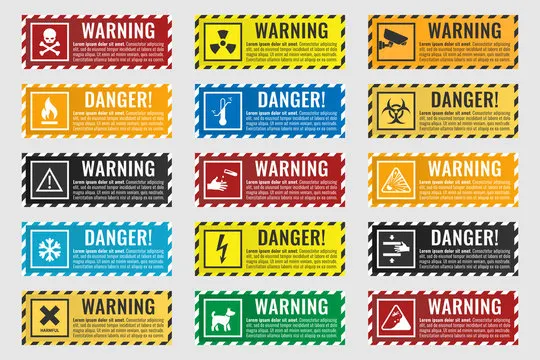
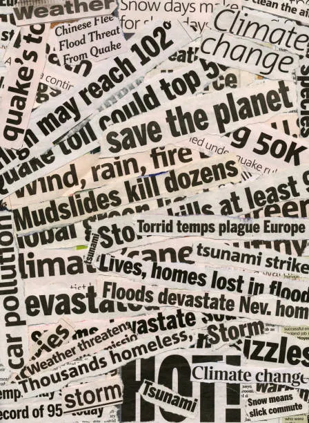

AI systems reshape how news authenticity is evaluated online
New multimodal verification systems are being tested to detect manipulated or AI-generated content across news platforms, social media, and digital advertising networks.
Tech Correspondent • 2 hours ago
Community garden initiative expands across Melbourne schools
Schools across the region are introducing sustainability programs focused on hands-on gardening and environmental education.
Education Desk • 1 day ago
Train network reliability improves after infrastructure upgrades
Recent upgrades to signalling systems have improved punctuality across major metro rail lines.
Transport Reporter • 2 days ago
New youth mental health centre opens in inner suburbs
A publicly funded centre has opened offering counselling and early intervention services for young people.
Health Bureau • 3 days ago

Shocking miracle diet trend spreads online
Viral posts claim a rapid transformation diet with no scientific backing currently verified.
Health Desk • 5 hours ago

Food safety claims spark widespread online debate
A viral post raises concerns about common food products, prompting fact-checkers to investigate.
Investigations Unit • 6 hours ago
Viral post triggers misinformation concerns online
A widely shared post containing unverified claims spreads rapidly across social platforms.
Digital Desk • 7 hours ago
Digital trust frameworks reshape online verification systems
New evaluation systems aim to improve credibility scoring across digital platforms.

Platforms test new misinformation warning labels
Experimental features highlight potentially unreliable content before user engagement.
AI verification tools become standard in content moderation
Automated systems now assist in identifying manipulated or misleading media content.

Study finds rise in emotionally driven headlines online
Research shows strong correlation between emotional language and engagement rates.